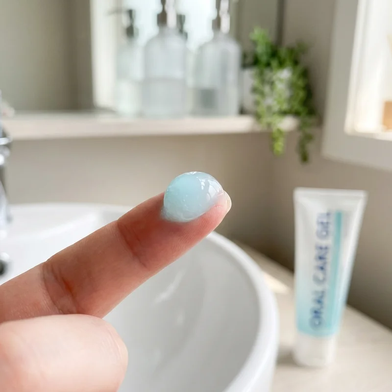

💊 Suplementos y Nutrición
Descubre suplementos naturales, vitaminas y nutrientes esenciales que pueden ayudarte a optimizar tu salud y alcanzar tus objetivos de bienestar.
Triple Magnesio

El triple magnesio combina tres formas biodisponibles para maximizar la absorción y ofrecer beneficios completos...
Leer más →Malato de Magnesio
El malato de magnesio es una forma altamente absorbible que apoya la producción de energía y la función muscular...
Leer más →Aloclair

Aloclair es un gel bucal diseñado para aliviar el dolor y proteger las lesiones de la mucosa oral...
Leer más →Andrographis Paniculata

Andrographis paniculata es una planta medicinal con propiedades inmunomoduladoras y antiinflamatorias...
Leer más →